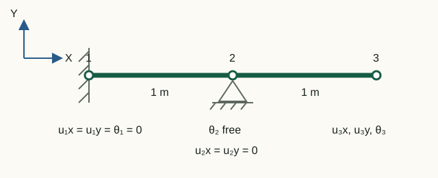

Natural frequencies and mode shapes
Free vibration of a linear undamped system is determined by stiffness, mass and supports. Modal analysis does not use specified nodal loads: it finds motions the system can sustain after an initial disturbance.
Generalized eigenvalue problem
For free motion without external force:
M ü(t) + K u(t) = 0
Substituting the harmonic form u(t) = φ sin(ωt) gives:
K φ = λ M φ, λ = ω2
The natural angular frequency is ω = √λ, and the frequency in hertz is:
f = ω/(2π)
In solveModal pairs are computed using eig(Kff, Mff), then sorted in ascending λ order.
Why solve only on free DOFs?
As in statics, first construct fixedDOFs and freeDOFs. The eigenvalue problem uses the reduced matrices:
Kff φf = λ Mff φf
Keeping constrained components in the full problem by artificially modifying rows makes the spectrum depend on the numerical constraint method. Reduction preserves the physical matrices of the free subsystem.
validateReducedSystem checks positive definiteness of Kff and Mff. A mechanism or massless free DOF stops the analysis before calling eig.
Returning to the full mode shape
Each reduced eigenvector is expanded to all model DOFs:
modeShapes = zeros(numberOfDOFs, numberOfModes);
modeShapes(freeDOFs, :) = reducedModeShapes;Constrained DOF rows are therefore exactly zero, and row numbers again match global DOF numbers. This matters for subsequent visualization and comparison of nodal mode shapes.
Mode shape scale and sign
If φ is an eigenvector, then cφ for any nonzero c describes the same mode. The absolute amplitude and sign returned by eig are not physical displacements.
Two useful normalizations:
- mass normalization: choose the scale so that φTMφ = 1;
- for display: divide components by max|φi| and, if needed, fix the sign of the largest component.
Distinct modes of a symmetric system are orthogonal with respect to mass and stiffness:
φiTMφj = 0, φiTKφj = 0, i ≠ j
Animating a mode in the postprocessor
Save the model and modal result to JSON and open it in the MKE-F offline postprocessor without a local server or internet connection.
1. Run and export
Open a terminal in the project root, start GNU Octave, and run:
addpath(pwd);
setup;
problem = StructFEProblem(fullfile( ...
'examples', 'cases', 'CaseBeam.txt'));
model = problem.GetAnalysisModel();
result = problem.RunModal();
exportPostprocessorData(model, result, ...
fullfile('output', 'modal-frame.json'), ...
struct('title', 'Mode shapes', ...
'lengthUnit', 'm', 'prettyPrint', true));From the repository root, run docker compose up --build (or docker-compose up --build) and open the preprocessor. Use Open TXT to load the file examples/cases/CasePreprocessorModal.txt and click Run analysis. Computed modes open automatically in the postprocessor, where you can animate them and download the JSON.
After execution, the file modal-frame.json appears in the directory output. You can also check computed frequencies in the terminal with result.frequenciesHz.
2. Open the result
- Open
postprocessor/index.htmlin Chrome, Edge or Firefox. - Click Open JSON and select the generated file
output/modal-frame.json. You can also drag it into the dashed area. A supplied example is inexamples/results/modal-frame.json. - In the Mode list, select a mode. Its frequency f in Hz and angular frequency ω in rad/s are displayed alongside.
- Click Play to start the animation. The buttons −1 and +1 move to adjacent modes; Visualization speed changes playback speed.
- Move Phase factor from −1 to +1 to inspect the negative peak, undeformed geometry and positive peak manually. The field Display multiplier changes only the displayed mode scale.
- Click a node or element: the Selection panel shows normalized components of the selected mode and their values at the current phase.
- Click Export SVG or Export PNG to save the current frame with the mode number, frequency, phase and scale.
The viewer standardizes the arbitrary sign of each mode and normalizes it for display only. The display factor changes the visible amplitude but not the computed natural frequencies.
The two-second cycle and speed selector are viewing aids and do not reproduce the frequency f. Normalized mode components have arbitrary amplitude and cannot be read as displacements in meters. The actual values of f and ω are always shown separately.
SVG or PNG export captures the current visible phase. The caption records the mode number, f, ω, phase factor and scales so the saved frame remains unambiguous outside the application.
Mode residual
A frequency alone does not verify its vector. For each eigenpair, calculate:
ri = Kffφi − λiMffφi
A relative norm scaled by the sizes of the two terms is useful because it is independent of arbitrary mode scaling. Do not apply this check to full constrained rows: these contain constraint forces analogous to static reactions.
Laboratory 05. Frequencies and modes of a beam with an intermediate support
The aim is to connect free DOFs to mode-shape components and verify frequencies through modal stiffness and mass.

Input data and notation
Each span is 1 m long. A = 4·10⁻⁴ m², E = 200 GPa, ρ = 7800 kg/m³, I = 5.33·10⁻⁸ m⁴. Full component order: [u₁x; u₁y; θ₁; u₂x; u₂y; θ₂; u₃x; u₃y; θ₃]. Modal analysis does not use the external force in the input file.
Before running: hand calculations
- List constrained and free DOFs from the supports in the diagram. Determine how many frequencies will be found.
- From Kφ = ω²Mφ derive how frequencies change if all mass doubles at unchanged stiffness.
Run in Octave
Run from the project root. The supplied function prints the results; you do not need to edit its code for this exercise.
addpath(pwd);
setup;
addpath(fullfile(pwd, "reference", "examples"));
r = example_05_modal_frame();Working with the results
- Compare
Fixed DOFsandFree DOFswith your numbering. InFull modes scaled to max(abs(component)) = 1each column is a separate mode; label the four unconstrained rows by physical component. - For each frequency in
Natural frequencies [Hz]calculate (2πf)². Compare with the corresponding diagonal entry ofPhi' * Kff * Phi after mass normalization. - Check that
Phi' * Mff * Phi after mass normalizationis close to the identity matrix. Explain the unit diagonal and small off-diagonal entries. - Use rows 6–9 of the printed modes to identify the axial mode and the bending modes. Sketch free-end displacement and rotations for one bending mode. The scale and overall sign are arbitrary; the values do not give forced-motion amplitudes.
DOFs 1–5 are constrained; the free DOFs are [6 7 8 9] = [θ₂ u₃x u₃y θ₃], giving four frequencies: approximately 23.019, 173.115, 438.199 and 1395.881 Hz. The first three modes are bending modes and the fourth is axial. Modal mass is the identity; modal stiffness is diagonal with entries (2πf)². The printed maximum relative residual is below 10⁻¹⁰. Doubling the mass divides every frequency by √2.
What to include in the report
The diagram and DOF list, a mode number/f/(2πf)²/modal stiffness/motion type table, a sketch of one mode, and the predicted mass effect.
Chapter source code
solveModal.m— reduced eigenvalue problem and mode expansion;postprocessor/js/modal-view.js— normalization, sign, scale and display phase;validateReducedSystem.m— stiffness and mass checks;example_05_modal_frame.m— residuals, normalization and orthogonality.
Theory
- Henri P. Gavin, Real Modes of Vibration of Building Structures, Duke University, revision of September 16, 2025: section 2, equations (2)–(5).
MPC
MPC analysis solves Kr φr = ω²Mr φr, then φ = Tφr. The mode count equals the number of independent DOFs. Intermediate transverse constraints remove spurious mechanisms in a refined truss member. Nonzero rhs is rejected.
Complete MPC guide · JSON v3 · CaseMPCFrame.txt · CaseMPCTruss.txt
Mz end releases
Private rotations retain the original consistent mass. The release condition is checked using K*phi − omega²*M*phi in modal analysis and M*a + K*u − F in transient analysis. The elastic K*u moment alone need not vanish. Shapes use end rotations, including modes with stationary nodes.
JSON v4 · CaseReleaseStatic · CaseReleaseModal · CaseReleaseTransient